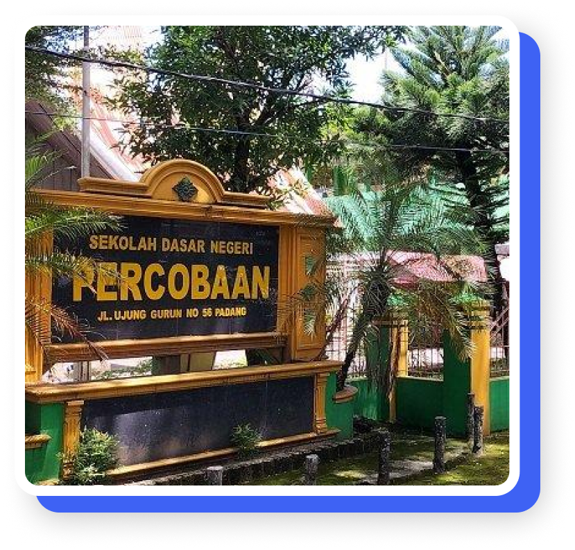
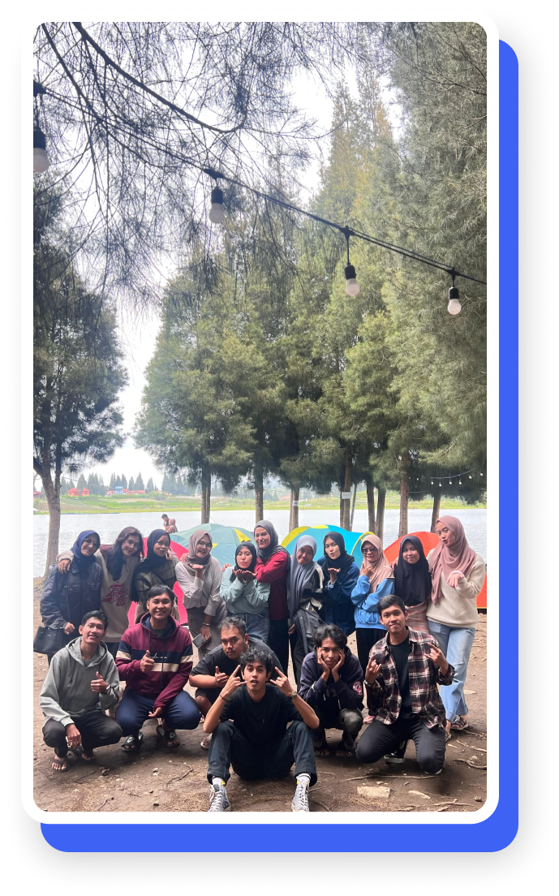

Visi
Terwujudnya Peserta Didik yang Religius, Bernalar Kritis, Mandiri, Kreatif, dan Berwawasan Lingkungan

Misi
- Membekali peserta didik dengan pengetahuan agama sesuai dengan keyakinan masing-masing
- Mengamalkan ajaran agama sesuai dengan keyakinan masing-masing dalam kehidupan sehari-hari
- Memberikan kemampuan dasar ilmu pengetahuan dan teknologi dengan mengintegrasikan kecerdasan spiritual, intelektual, emosional dan sosial untuk mencapai prestasi akademik dan non akademik
- Menciptakan proses pembelajaran kreatif, inovatif, kolaboratif dan berdiferensiasi
- Mengembangkan bakat dan minat peserta didik agar memiliki keterampilan hidup (life skill) dan cinta budaya bangsa Indonesia
- Memotivasi peserta didik untuk mengembangkan sikap pembelajar sepanjang hayat, kerja keras, berani, percaya diri, tangguh dan pantang menyerah
- Memberdayakan lingkungan sekolah dan luar sekolah sebagai media dan sumber pembelajaran
- Menumbuhkembangkan kesadaran warga sekolah untuk menjaga dan melestarikan lingkungan
- Mengembangkan saran dan prasarana yang representatif serta ramah lingkungan untuk mendukung pengembangan potensi peserta didik berwawasan lingkungan